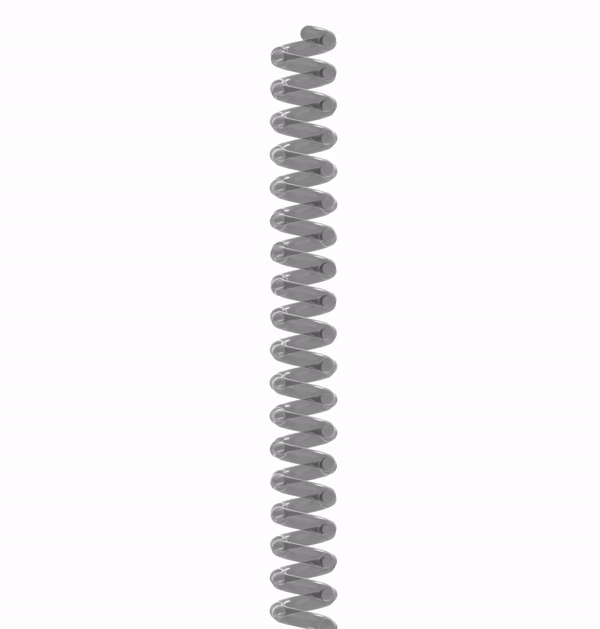
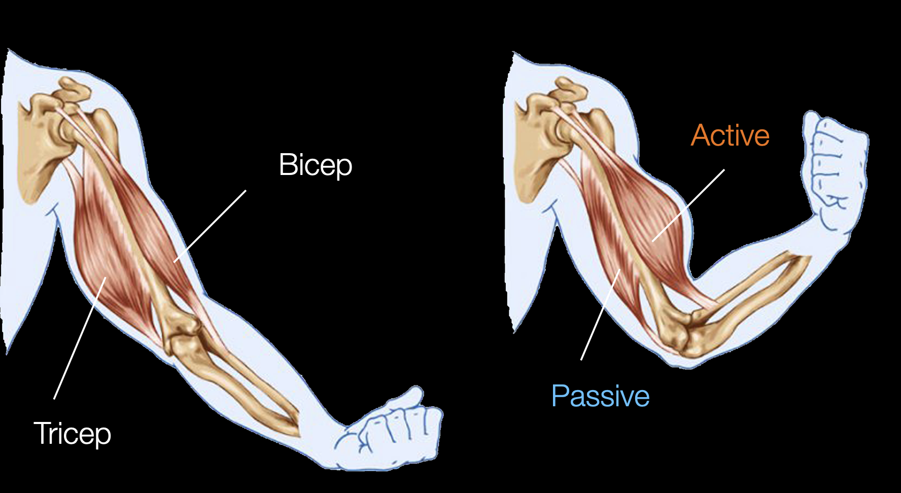
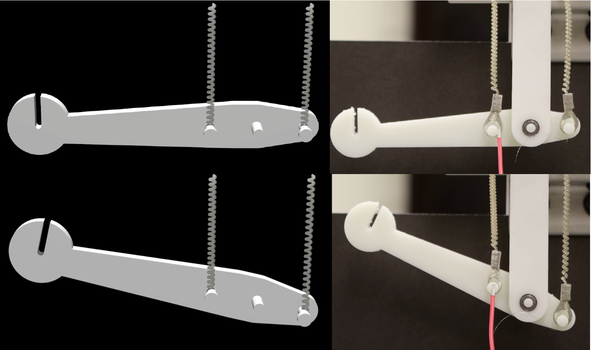
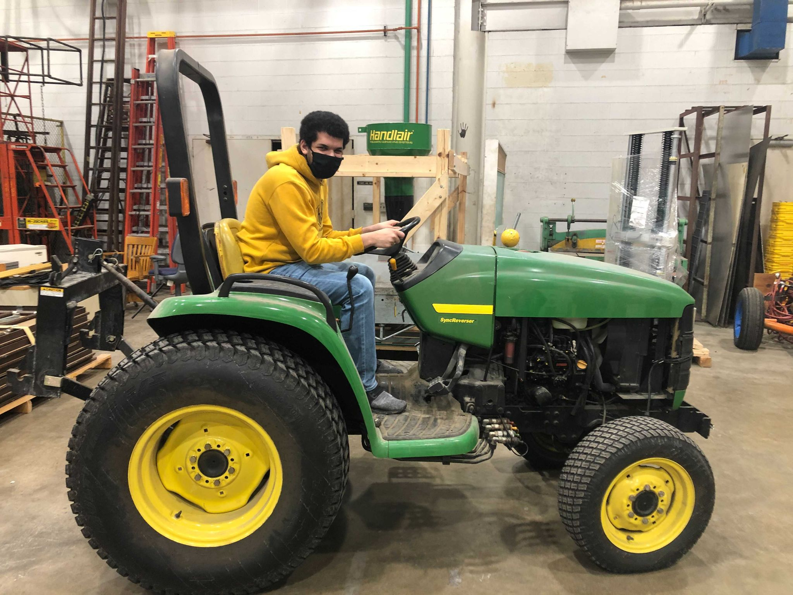
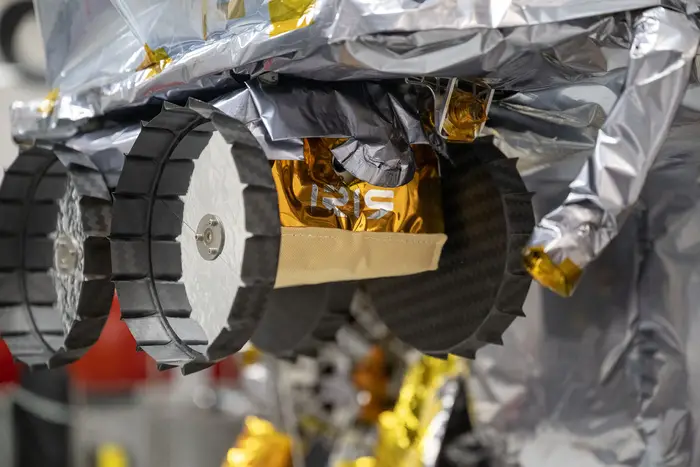

Materials that expand anisotropically can be used to make coiled muscles that reversibly untwist
when heated/chemically actuated. These types of muscles have several advantages that make interesting for
robotic applications. These advantages include the following:
- Being easy and inexpensive to manufacture
- Operate without hysteresis
- Provide more than 30% reversible contraction
- Provide millions of cycles of stroke without significant degradation
Below is an example of these muscles in action. I developed a model for the actuation of these muscles
and used our simulator PyElastica to simulate
the actuation of single fiber muscle. We work closely with the Kinetic Materials Research Group
who manufacture these muscles and provides us with experimental data to validate our models.

Simulation of coiled muscle contracting, click on image for interactive render.
One of the applications of the coiled muscle models I developed is to design mechanisms
that utilize theses muscles for various applications. One such application is to use them
as actuators for a soft octopus arm where different modes of deformation such as bending
and twisting can be realized by arranging the muscles in different ways. We can use computational
tools to test out different configurations and optimize our design before manufacturing the
real arm.
Simulation of octopus arm bending (left), and twisting (right).
Another application of the muscles is to use their passive properties to create antagonstic arrangments
that are analogous to the ones found in animals. One such antagonstic arrangment is the bicep and tricep
muscles in the human arm. When the bicep the is contracted, the tricep applies a passive force that limits the contraction
(for safety and stability reasons) and helps with returning the arm to the original configuration.

Example of antagonstic muscle pair.
For this application I had to extended the capability of our cosserat rod simulator PyElastica to
be able to import triangluar mesh based rigid bodies and surfaces. Thenm, I simulated an artificial arm
that the Kinetic Materials Research Group created
by importing the CAD model they created and connecting it to the muscles I have modeled before.

Simulated vs real antagonstic arm.
One of the applications of the new triangluar mesh import capability I developed for PyElastica was to use it
to replicate real complex environments to better simulate real life situations. Based on previous work our
group has done on limbless locomotion, we used RL to train policies to control a limbless soft robot (or snake)
and we used imported meshes of reconstructed real environments to test out these policies.

RL trained snake navigating realistic heterogenous terrain, click on image for interactive render.
Another use for the mesh import capability was to simulate medical procedures that involve wires/tubes being inserted
into different organs/parts. For example, a stomach endoscopy is a procedure where a tube with a camera at the end is
inserted through the mouth and into the stomach. Another example is endovascular coiling where a tube is inserted into
the groin artery and guided to an aneurysm to be treated by puting a coil in its place.
Tube being inserted into a blood vessels and guided to an aneurysm (left), and simulated stomach endoscopy (right)
I worked on this project during my time at KAUST in Summer of 2021. The project was to
develop a computational model for a microbot leg designed by Hussein Hussein (who was a
postdoc at KAUST at the time). The model was to be used to understand and control the
microbot leg to make it walk.

The microbot compared to my finger tip.
I had three main tasks in this project.
- Develop an analytical model for the microbot leg
- Simulate the leg using this model in MATLAB
- Collect experimental data to validate the simulation and model
This was a unique experience for me at the time because it was my first time developing a
model for a non-rigid body robotic system (the leg had elements that would deform to move it).
It was also my first time creating my own simulation of a physical system (instead of using a simulator).
Additionaly, I learned how to use a probe station to gather data from micro sized systems.
Probe station used for to gather data from micro sized systems.
For more details on this project, you can take a look at the poster
I made for KAUST Internship Program Poster Symposium. Now that I think back about this project, it did end
up starting my passion for using computational tools to model physical systems.
I worked on this project during my Junior when I got into the DPI Research Scholars program.
The project goal was to convert a regular tractor into an autonomous one. The project was supervised
by professor Girish Chowdhary here at Illinois. My tasks for the project was to setup the hardware
systems (computers, sensors, and actuators) that will be used to automate the tractor. A picture of
me riding the tractor is shown below.

Me riding the tractor we worked on.
I learned a lot about setting up hardware systems during this opportunity such selecting appropriate
computers, depth/stereo cameras, lidars, and motors for a particular application, installing Ubuntu and ROS on different computers,
installing ROS wrappers for different sensors, using ROS to communicate between multiple computers and so
much more. Below are pictures of the Velodyne Puck Lidar and Intel Realsense D435i running after I set them up.
Depth image from Intel Realsense D435i (left), Point Cloud from Velodyne Puck Lidar (right).
It was an overall great learning experience, and it gave me enough understanding of hardware selection and
setup that I can start making my own robotics projects. You can see some of my personal projects inspired by the
things I learned in this project through here!
I worked on this project during summer 2020 when I got into the Carnegie Mellon University Robotics Institute Summer
Scholars (RISS) program. I was a part of the Iris Lunar Rover teleoperations team
whose main objective was to create a system for localizing the rover when it is on the moon based on its surroundings.
Since the only thing surrounding the rover on the moon are rocks, rock detection and segementation are crucial for
figuring out where the rover is with respect to its surroundings. My task was to develop software that can detect and
segement rocks from camera images to be used for localization.

Rocks detected and segmented by the software I developed.
This was my first purely computational project as I was working remotely due to the Covid-19 pandemic. I learned a lot
about computer vision, image processing, and methods for localization and mapping such as SLAM. It also exponentially
improved my programming skills and taught me a lot of the best practices for programming (writing documentation, separate
long code into multiple files and so on). I also wrote my first research paper which was published in the 2020 issue of
the Robotics Institute Summer Scholar'
Working Papers Journals./ For more details on the project you can check the paper or the
poster I made for RISS poster session.
It was unfortunate that IRIS never made to the moon due to Astrobotic's Peregrine lander experiencing an anomaly that
would prevent it from making a soft landing on the moon, which meant it had to make a controlled reentry to Earth. Although
the work we did never made it to the moon, me and everyone else who worked on the project learned a lot from this project
that would help future generations of rovers and we succeeded in making a rover that went closer to the moon than any other
student built rover has to date.

The Iris lunar rover secured to the Peregrine Lunar Lander.